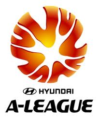

Major League Soccer: United States

World Cup USA Chairman Alan I. Rothenberg announced plans for Major League Soccer (MLS) on Dec. 17, 1993. Twenty-two cities submitted bids for teams. In October of 1995, it was announced that MLS would begin play in March of 1996 with ten teams: the Colorado Rapids, Columbus Crew, Dallas Burn, D. C. United, Kansas City Wizards, Los Angeles Galaxy, MetroStars, New England Revolution, San Jose Clash, and Tampa Bay Mutiny.
The Chicago Fire and Miami Fusion were added as expansion teams in 1998. The MLS originally had two conferences, but was reorganized into three divisions, with four teams each, in 2000. However, the Miami Fusion and Tampa Bay Mutiny were dropped before the 2002 season, and the league went back to the two-conference format.
To go to official website you can click the logo or click Here

JSL (Japan Soccer League) established first revitalisation committee on March 1988, and on October of the same year the Second revitalisation committee was establised.
To go to official website you can click the logo or click Here

August 26, 2005 marked a significant day in Australian football history, when the first match of the inaugural Hyundai A-League season kicked off in Newcastle. After almost two years in the making, Australia’s latest national competition hit the sporting landscape as well as the hearts and minds of the Australian sporting public.
To go to official website you can click the logo or click Here
. It was established in 1943 and as of 2011 has 18 clubs. Up to June 2011, it was divided into three groups competing for league titles. However, in July 2011, groups were removed. Each season the league holds two tournaments: the Apertura, which starts in the summer, and the Clausura, which starts in the winter. The league is currently ranked number 11th in the world and number 10th in the last decade (2001–2010) by the IFFHS.
To go to official website you can click the logo or click Here

The idea of identifying the strongest in the dispute champion and cup winner of the country has been implemented in our football in the Soviet times, when the "Komsomolskaya Pravda" has proposed to play the Cup season. Starting stuck in part: a prize contested every year, and the regulations of the draw was unstable. Some couples have met on neutral ground, the other wire matches home and away. Sentences ranged from early spring to late autumn, and in 1987 the Kiev "Dynamo" and capital "Torpedo" simply struck from the penalty spot after a series of meetings calendar USSR Championship,
To go to official website you can click the logo or click Here